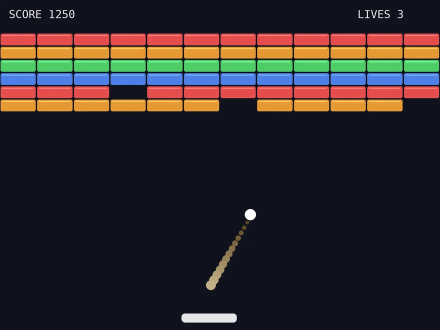

In Practice
A 2D Game#
Everything so far has been technique. This chapter puts a handful of those techniques to work in something playable: a small brick-breaking game. A paddle, a ball, a wall of bricks. It is deliberately tiny, so that the whole structure fits in one chapter and you can see how a renderer and game logic meet.
What we need#
- A sprite renderer that draws many colored, textured rectangles in one draw call.
- An orthographic camera in pixel-like units.
- A game loop with delta time and input.
- Collision detection between a circle and rectangles.
The sprite renderer#
A sprite is a quad with a position, size, color and texture region. We use instancing: one unit quad generated in the vertex function, and one instance per sprite.
struct SpriteInstance {
float2 position; // top-left corner, in game units
float2 size;
float4 color;
float4 uvRect; // xy = origin, zw = size, within the texture
};
struct SpriteOut {
float4 position [[position]];
float2 uv;
float4 color;
};
vertex SpriteOut vertex_sprite(uint vertexID [[vertex_id]],
uint instanceID [[instance_id]],
const device SpriteInstance *sprites [[buffer(0)]],
constant float4x4 &projection [[buffer(1)]]) {
const float2 corners[4] = { {0, 0}, {1, 0}, {0, 1}, {1, 1} };
SpriteInstance sprite = sprites[instanceID];
float2 corner = corners[vertexID];
SpriteOut out;
out.position = projection * float4(sprite.position + corner * sprite.size, 0.0, 1.0);
out.uv = sprite.uvRect.xy + corner * sprite.uvRect.zw;
out.color = sprite.color;
return out;
}
fragment float4 fragment_sprite(SpriteOut in [[stage_in]],
texture2d<float> atlas [[texture(0)]],
sampler s [[sampler(0)]]) {
return atlas.sample(s, in.uv) * in.color;
}
On the Swift side the renderer collects sprites during the frame and draws them all at once:
struct SpriteInstance {
var position: SIMD2<Float>
var size: SIMD2<Float>
var color: SIMD4<Float>
var uvRect: SIMD4<Float> = [0, 0, 1, 1]
}
final class SpriteBatch {
private var sprites: [SpriteInstance] = []
private let buffer: MTLBuffer
private let capacity = 4096
init(device: MTLDevice) {
buffer = device.makeBuffer(length: MemoryLayout<SpriteInstance>.stride * capacity,
options: .storageModeShared)!
}
func add(_ sprite: SpriteInstance) {
if sprites.count < capacity { sprites.append(sprite) }
}
func flush(encoder: MTLRenderCommandEncoder) {
guard !sprites.isEmpty else { return }
buffer.contents().copyMemory(from: sprites,
byteCount: MemoryLayout<SpriteInstance>.stride * sprites.count)
encoder.setVertexBuffer(buffer, offset: 0, index: 0)
encoder.drawPrimitives(type: .triangleStrip, vertexStart: 0, vertexCount: 4,
instanceCount: sprites.count)
sprites.removeAll(keepingCapacity: true)
}
}
Use a pipeline with alpha blending. Put all the game's images in one texture, an atlas, and select regions with uvRect, so that the whole game is a single draw call. For solid-colored rectangles, bind a 1 × 1 white texture.
The playing field#
Give the game a fixed logical size, independent of the window, with the origin at the top left and y pointing down, which is convenient for 2D:
let fieldSize = SIMD2<Float>(800, 600)
var projection = float4x4(orthographicLeft: 0, right: fieldSize.x,
bottom: fieldSize.y, top: 0,
near: -1, far: 1)
Swapping bottom and top flips the y axis.
Game objects#
struct Brick {
var position: SIMD2<Float>
var size: SIMD2<Float>
var color: SIMD4<Float>
var isAlive = true
}
struct Ball {
var position: SIMD2<Float> // center
var velocity: SIMD2<Float>
var radius: Float = 10
var isStuck = true // resting on the paddle until launched
}
final class Game {
var paddlePosition = SIMD2<Float>(350, 570)
let paddleSize = SIMD2<Float>(100, 16)
let paddleSpeed: Float = 500
var ball = Ball(position: [400, 560], velocity: [120, -350])
var bricks: [Brick] = []
var lives = 3
func loadLevel(rows: Int, columns: Int) {
let size = SIMD2<Float>(800 / Float(columns), 24)
let palette: [SIMD4<Float>] = [[0.9, 0.3, 0.3, 1], [0.9, 0.6, 0.2, 1],
[0.3, 0.8, 0.4, 1], [0.3, 0.5, 0.9, 1]]
bricks = (0..<rows).flatMap { row in
(0..<columns).map { column in
Brick(position: [Float(column) * size.x, 60 + Float(row) * size.y],
size: size - 2,
color: palette[row % palette.count])
}
}
}
}
A level is just data. Loading levels from a text file where each digit is a brick type is an easy extension.
Update#
extension Game {
func update(deltaTime: Float, input: Float, launch: Bool) {
// Paddle: input is -1, 0 or 1.
paddlePosition.x += input * paddleSpeed * deltaTime
paddlePosition.x = min(max(paddlePosition.x, 0), 800 - paddleSize.x)
if ball.isStuck {
ball.position = [paddlePosition.x + paddleSize.x / 2, paddlePosition.y - ball.radius]
if launch { ball.isStuck = false }
return
}
ball.position += ball.velocity * deltaTime
// Walls
if ball.position.x < ball.radius || ball.position.x > 800 - ball.radius {
ball.velocity.x = -ball.velocity.x
ball.position.x = min(max(ball.position.x, ball.radius), 800 - ball.radius)
}
if ball.position.y < ball.radius {
ball.velocity.y = abs(ball.velocity.y)
}
// Bricks
for i in bricks.indices where bricks[i].isAlive {
if let normal = collide(ball, rectPosition: bricks[i].position, rectSize: bricks[i].size) {
bricks[i].isAlive = false
ball.velocity = reflect(ball.velocity, n: normal)
break
}
}
// Paddle: the bounce angle depends on where the ball hits.
if ball.velocity.y > 0,
collide(ball, rectPosition: paddlePosition, rectSize: paddleSize) != nil {
let center = paddlePosition.x + paddleSize.x / 2
let offset = (ball.position.x - center) / (paddleSize.x / 2) // -1...1
let speed = length(ball.velocity)
ball.velocity = normalize(SIMD2<Float>(offset, -1.2)) * speed
}
// Lost the ball
if ball.position.y > 600 + ball.radius {
lives -= 1
ball.isStuck = true
ball.velocity = [120, -350]
}
}
}
Steering the ball by where it meets the paddle is what makes the game controllable. A purely physical reflection would feel lifeless.
Circle against rectangle#
Find the point of the rectangle closest to the circle's center by clamping. If that point is within one radius, they overlap. The direction from the closest point to the center tells us which side was hit:
func collide(_ ball: Ball, rectPosition: SIMD2<Float>, rectSize: SIMD2<Float>) -> SIMD2<Float>? {
let closest = simd_clamp(ball.position, rectPosition, rectPosition + rectSize)
let difference = ball.position - closest
guard length_squared(difference) < ball.radius * ball.radius else { return nil }
// Pick the dominant axis as the collision normal.
if abs(difference.x) > abs(difference.y) {
return [difference.x > 0 ? 1 : -1, 0]
} else {
return [0, difference.y > 0 ? 1 : -1]
}
}
At high speeds a ball can pass through a thin brick between two frames. Running the update in several small sub-steps per frame is the simplest protection.
Render#
func render(game: Game, batch: SpriteBatch, encoder: MTLRenderCommandEncoder) {
for brick in game.bricks where brick.isAlive {
batch.add(SpriteInstance(position: brick.position, size: brick.size, color: brick.color))
}
batch.add(SpriteInstance(position: game.paddlePosition, size: game.paddleSize,
color: [0.9, 0.9, 0.9, 1]))
let r = game.ball.radius
batch.add(SpriteInstance(position: game.ball.position - r, size: [2 * r, 2 * r],
color: [1, 1, 1, 1], uvRect: ballUVRect))
encoder.setRenderPipelineState(spritePipelineState)
encoder.setVertexBytes(&projection, length: MemoryLayout<float4x4>.stride, index: 1)
encoder.setFragmentTexture(atlasTexture, index: 0)
encoder.setFragmentSamplerState(samplerState, index: 0)
batch.flush(encoder: encoder)
}
The renderer knows nothing about the rules, and the game knows nothing about Metal. Keeping that separation is the most valuable habit in this chapter.

Making it feel good#
The game works. What makes it fun is polish, and each item below reuses a technique from this series:
- Particles: an additive-blended trail behind the ball, drawn with the same sprite batch.
- Screen shake and flashes: render the game to a texture and distort it in a post-processing pass for a few frames after a hit.
- Glow: bloom on bright bricks.
- Score and lives: the atlas text from Text Rendering.
- Power-ups: sprites that fall from destroyed bricks and change the paddle size or ball speed when caught.
- Sound:
AVAudioEngineorAVAudioPlayerfor hit effects.
Where to go from here#
Add a state machine for menu, playing, won and lost. Add levels. Then try a different game with the same sprite batch: the renderer you wrote here is enough for a great many 2D games.